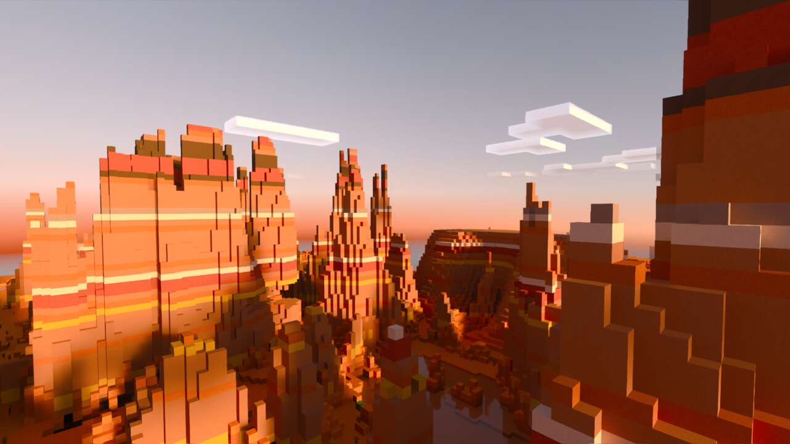
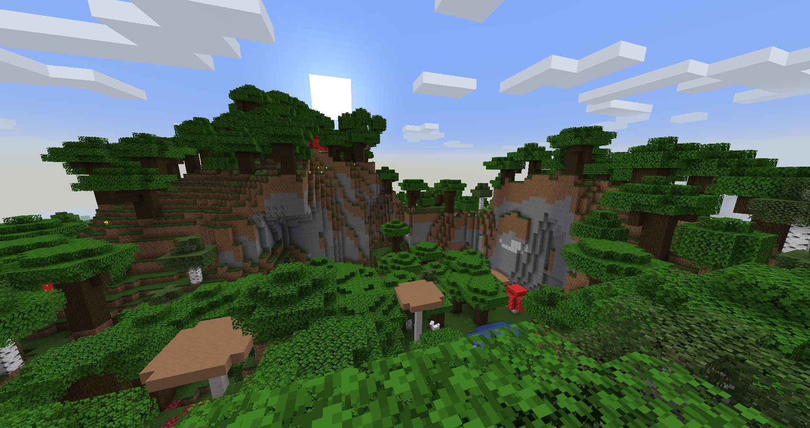
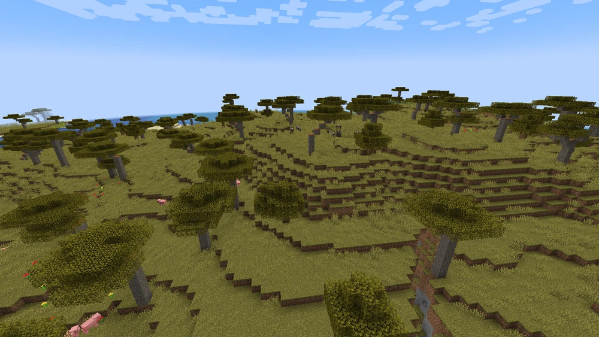
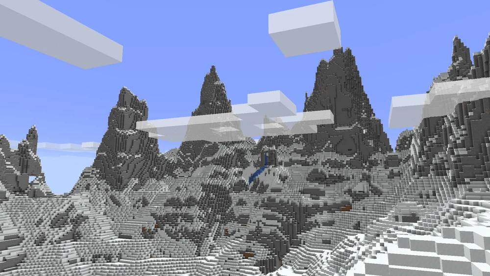

Les biomes désertiques sont très dénudés. Ils contiennent du sable, du
grès, des buissons morts, des lapins bruns et des cactus. Dans ces
biomes, tu peux parfois trouver des villages du désert, des avant-postes
de pillards, des temples et des puits avec des lacs.
Badlands

Les badlands, anciennement et communément appelés biome mesa, sont des
biomes chauds peu communs, présentant des monticules de terre cuite de
différentes couleurs. Il existe trois variantes différentes du biome des
badlands.
Forêt sombre

Une forêt sombre est un biome forestier tempéré. Elle est connue pour
son feuillage épais et dense qui bloque suffisamment la lumière pour
permettre aux créatures hostiles d'apparaître pendant la journée.
Bosquet de cerisiers
Un bosquet de cerisiers est un biome tempéré où les cerisiers forment
une forêt. Le bosquet de cerisier est une source de pétales et de
feuilles roses.
Savane

La savane est un biome chaud commun. Il se génère typiquement en bordure
de déserts ou de plaines, et possède trois variations au total.
Montagnes enneigées

Les plaines enneigées sont un biome enneigé plat généré généralement
près d'autres biomes enneigés ou froids tels que la taïga enneigée.